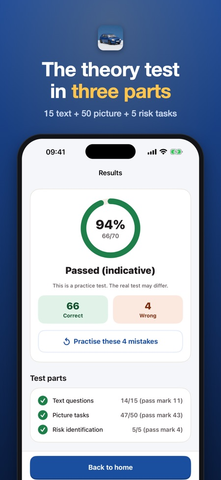
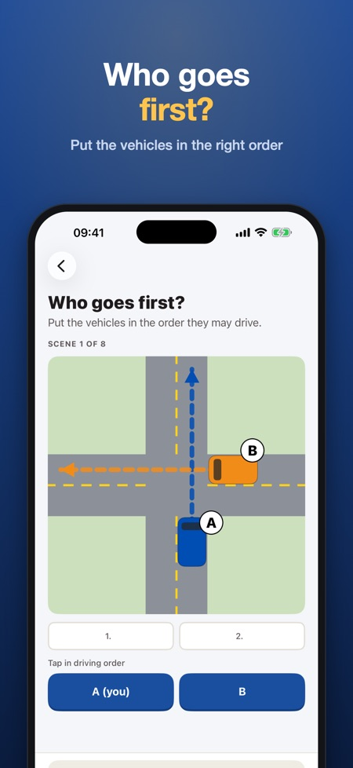
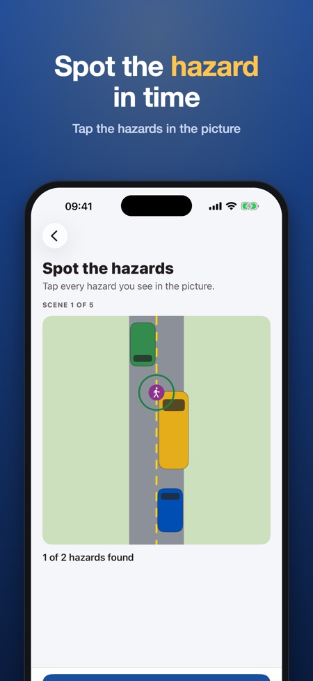

Finnish road signs, mock tests. Practise the Finnish theory test in Traficom's three-part format: 15 text questions, 50 picture tasks, 5 risk tasks. 300+ questions, each explained in English.



Prepare for the Finnish car (B) driving licence theory test in Traficom's format: 15 text questions, 50 picture tasks and 5 risk tasks in 30 minutes. 300+ questions in 12 topics, each with an explanation and a law reference. Pay once, no subscription.
QUESTIONS IN FINNISH OR SWEDISH, EXPLANATIONS IN ENGLISH
The questions are in Finnish or Swedish. After each answer you read why it is right or wrong in English (or Finnish or Swedish), so you learn the rules and the words at the same time.
WHAT'S INSIDE
• Road signs and sign recognition, right of way and junctions, traffic lights and road markings, speed and overtaking, pedestrians, cyclists and trams, parking, winter driving and wildlife, the vehicle and safety equipment, driver fitness and first aid, eco-driving and hazard perception
• Picture questions: road signs and top-down junction scenes – who goes first?
• Junction trainer: put the vehicles in the order they may drive
• Hazard pictures: tap every hazard you see
• Hazard perception questions: what is the biggest danger?
• Sign dictionary: 46 common signs with name and meaning, search by name or code
• Timed short mock test (10 questions) and full mock test in the official format (15 + 50 + 5 tasks, 30 minutes)
• Your mistakes come back until you get them right twice in a row
• Daily goal and streak
FAIR PRICE
Try road signs, right of way, the sign dictionary, the junction and hazard trainers the short mock test and one full mock test without a purchase (explanations of locked topics are part of the full version). Unlock everything with one purchase. No subscription, no ads, no account. Works offline.
This app is independent and not affiliated with Traficom, Ajovarma or any authority. All questions are our own, based on the Road Traffic Act 729/2018; they are not official test questions. Road signs are our own drawings. The full mock test follows the structure of Traficom's theory test regulation (parts, number of tasks, pass marks and time), but the questions and pictures are our own, so the result is indicative.